Integrating DevOps Velocity with ELM to achieve Business Outcomes
Business Scenarios covered by this demonstration:
* Visualize and Optimize the flow of work to improve team productivity
* Eliminate guess work and use data to make better investment decision for process improvement
About the Demonstration
For this demonstration, DevOps Velocity has already been integrated with ELM and value streams have been created visualizing the ELM data as stories, bugs, tasks, features and requirements. This setup allows you to focus on the features of the integrated solution and how DevOps Velocity and ELM can work together. For details on how to setup the environment, review the steps presented in the enablement section.
The following table shares information on which ELM projects have been visualized in DevOps Velocity:
| ELM Project | Velocity Value Stream | Additional Information |
|---|---|---|
| JKE Banking (Change Management) | JKE Banking Demo (Change Management) | The JKE Banking project was created in ELM using the Money that Matters sample data which includes work items in EWM and requirements added to ERM. A DevOps Velocity plugin has configured allowing the EWM data to be sync'd with Velocity and displayed in the value stream. |
| JKE Banking (Requirements Management) | JKE Banking Demo (Requirements Management) | The JKE Banking Demo (Requirements Management) value stream is visualizing requirements synchronized by integrating DevOps Velocity with JKE Banking (Requirements Management) project. |
| Meter Reader GC | Meter Reader Demo GC | This value stream is visualizing requirements synchronized with DevOPs Velocity from a ERM project which has Global Configuration enabled providing more robust requirements management capabilities enabling the use of DOORs NG components, streams and baselines. |
NOTE: The images provided in the steps below may not exactly match what is seen in the DevOps Velocity browser window. Understand that they are provided as a reference as you work through the demo steps.
Understanding the Business Challenge addressed in this demonstration
Many DevOps organizations use Dora metrics or Flow metrics to measure the efficiency of their software delivery pipeline. While Flow metrics focus on the stream of work items and the efficiency of processes, Dora metrics provide insights into the effectiveness of software development and delivery practices. However, regardless of which KPIs are adopted, both provide a high level measure of the end to end software delivery process.
DORA Metrics
- Deployment Frequency - How often do production releases occur?
- Lead Time to Change - What is the length of time it takes for code changes to be made available in production?
- Change Failure Rate - What is the frequency of deployments which cause an issue in production?
- Mean Time to Recovery - What is the length of time it takes to recover from the production issue?
Flow Metrics
- Flow Time: Is time-to-market getting shorter?
- Flow Velocity: Is value delivery accelerating?
- Flow Efficiency: Is upstream work holding up delivery?
- Flow Load: Is demand vs capacity being balanced?
- Flow Distribution: Are we investing in both value generation and protection?
Now it is a well know fact that any process is only as fast as its slowest point (Theory of Constraints). And all processes have at least one slow point. The "trick" is to find the bottleneck(s), take action to improve, and measure the outcome (better - same - worse) to understand if the desired result was achieved.
Using these high level metrics and armed with a desire to improve, the next typical step would be for the organization to execute a Value Stream Mapping exercise assembling a team of people to share their experience and opinions on how long each stage of the end to end process takes and recording this information on a value stream map - value add time (VA), non-value add time (NVA), process efficiency (PE) - for each individual stage in their process. This can be a very expensive and laboreous process where the outcome is only valid until some improvement action is implemented. Because, once the process improvement is implemented, the bottleneck will probably moved to another location in the delivery pipeline. Meaning, value stream mapping is not a one time exercise and should be a regular activity on one's journey to optimization.
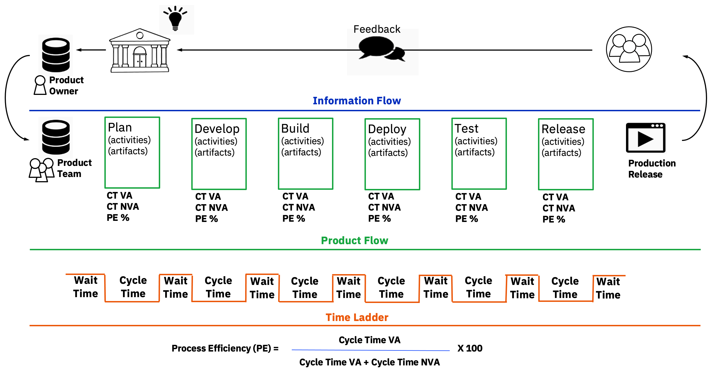
The alternative to Value Stream Mapping is Value Stream Management. A Value Stream Management solution, like DevOps Velocity, is continuously ingesting data from the various tools used in the software delivery pipeline and presenting that data in a holistic view providing insight, in almost real time, on not only how efficient the entire software delivery pipeline is but where in the pipeline opportunities for improvement exist. Value Stream Management is a much more scientific approach eliminating the guess work and helping teams make better decisions on where to improve using data instead of being based on opinion.
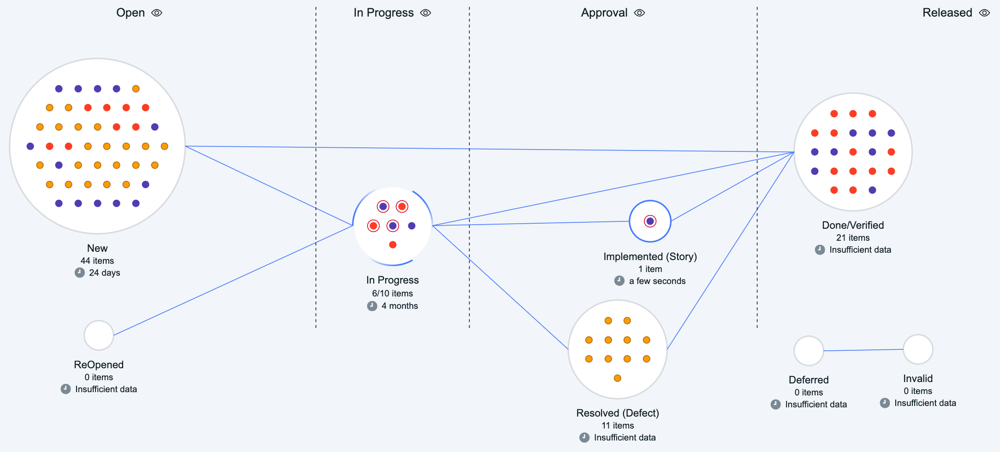
DevOps Velocity helps organizations by visualizing delivery pipeline data in a holistic dashboard allowing teams to make accurate decisions on where to invest in process improvement to optimize flow and achieve their desired business outcomes.
Introducing DevOps Velocity
DevOps Velocity is a multi-container application installed in a Kubernetes container management system.
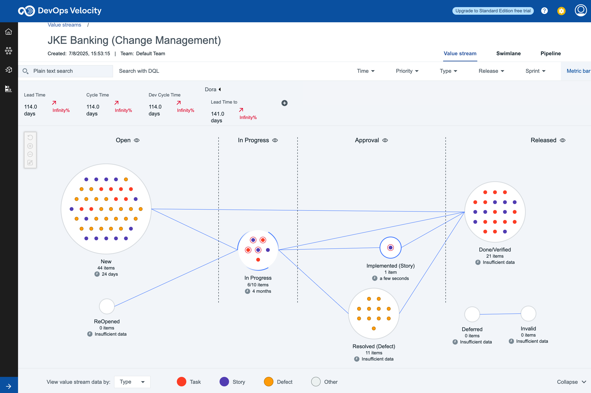
The DevOps Velocity value stream’s view provides a strategic window into your life-cycle workflow while simultaneously enabling you to drill-down and monitor individual elements with the intent of optimizing pipeline flow. These elements typically represent work items/issues, commits, pull requests, builds, deployments, and tests that are collected from many tools making up your delivery pipeline and integrated into Velocity via plugins. Individual elements are represented graphically by small circles, squares, or triangles, depending on the type, providing information from logically related tools, such as issues managed in an ALM solution linked to one’s source control management (SCM) system. How elements are visualized in a DevOps Velocity value stream can be simple to very complex. You are only limited by your knowledge of how to architect a value stream.
The pipeline capability enables organizations to drive releases by using application-focused methods. Add applications to logical environments and let DevOps Velocity generate basic release plans required to deploy the applications. Use quality gates to implement an enhanced level of automated governance helping organizations reduce business risk as software change moves through the delivery pipeline to the production environment.
DevOps Velocity’s enterprise-scale release management capabilities supports both cloud-native and on-premises deployment. Use DevOps Velocity to move releases through all of your development life-cycle environments including development, testing, and production. Create a predictable schedule of releases for your software applications. Share release statuses with all stakeholders so that they know the schedules, the key milestones, current status, and issues that may delay releases.
The Insights view helps organizations to assess the efficiency of product teams and the speed at which they are able to deliver value to the end users. Teams can measure every aspect of the development lifecycle with the supplied charts. Teams can create their own charts with metric definitions and upload custom data to DevOps Velocity using the Application programming interface (API) endpoints. Since data sources also encompass plug-ins and API calls, project data can come from virtually anywhere, including planning and development tools, testing and building applications, and deployment solutions.
In this demonstration, you will focus on the Value Stream and Insights views.
For more information about DevOps Velocity, visit Velocity's product documentation page.
Business Scenario 1: Visualize and Optimize the flow of work to improve team productivity.
1.1 DevOps Velocity and the value stream data
The value stream for this demo is architected to align with ELM's workflow including the phases and stages making up the software delivery pipeline. And through the integration between DevOps Velocity and ELM, DevOps Velocity tracks the number of work items and average time a work item spends in each one of the stages defined in the ELM workflow. It is DevOps Velocity's ability to present this type of information in a single control plane which allows teams to focus on where improvement is required instead of wasting time trying to determine which stage in the software delivery pipeline is the slowest point.
| Step | Details | Additional Information |
|---|---|---|
| 1 | Launch the Chrome browser from the Windows toolbar and click on the DevOps Velocity bookmark | 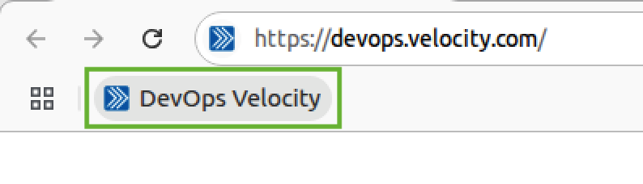 |
| 2 | Authenticate with Velocity using "admin" for both the user id and password. | 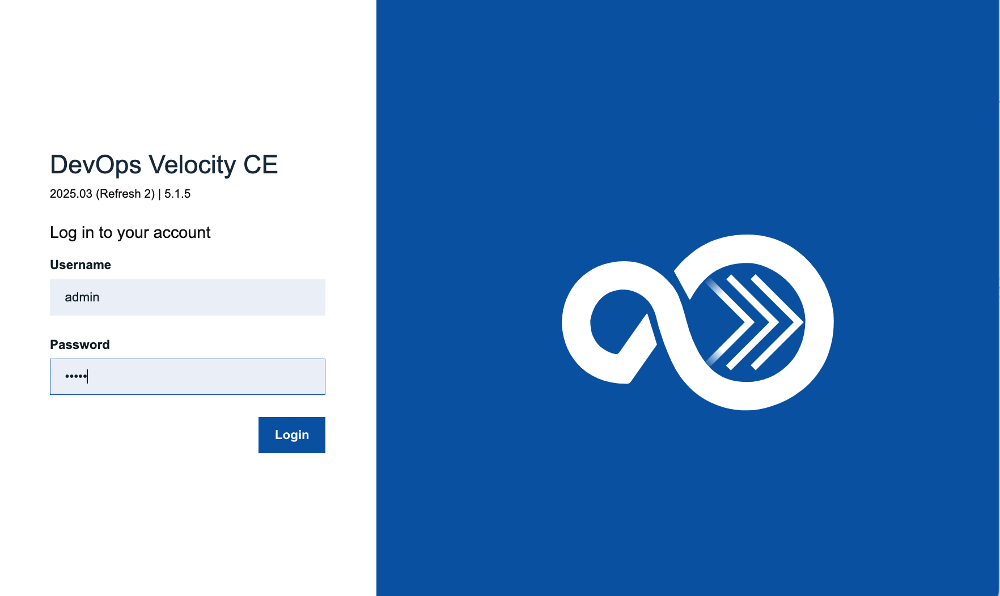 |
| 3 | Click the Value Stream icon on the LH navigation bar in Velocity. | 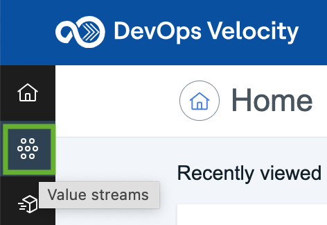 |
| 4 | Select the JKE Banking Demo (Change Management) value stream from the list of available value streams. | 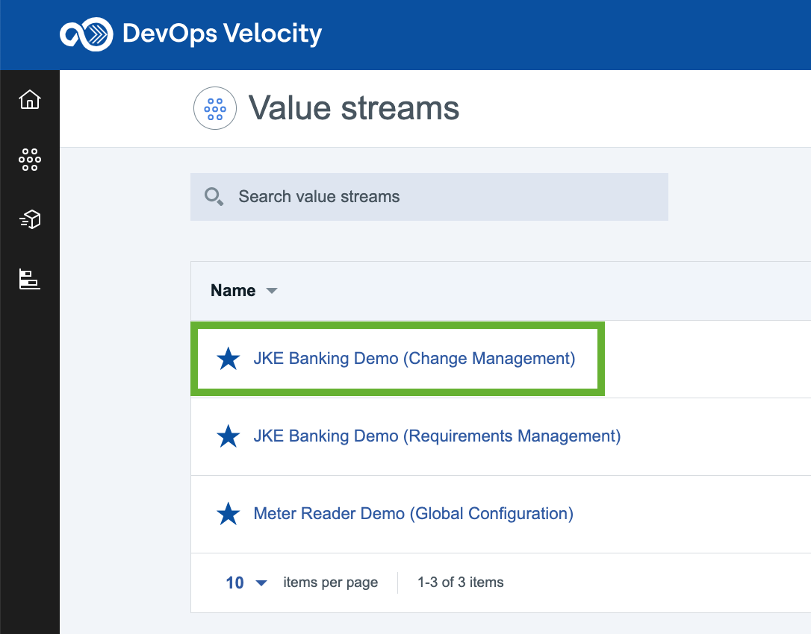 |
| 5 | Click on "Legend" link located on the sub navigation bar (top RHS of browser window). | 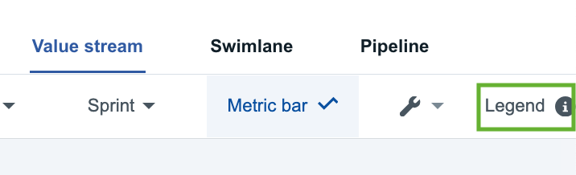 |
| 6 | Notice the outlines around the In Progress and Implemented stages differ. Referring to the Legend pop up window, the In Progress is showing as slow and would be a location to investigate further. Implemented stage is showing as fast and not the main target of further investigation. |
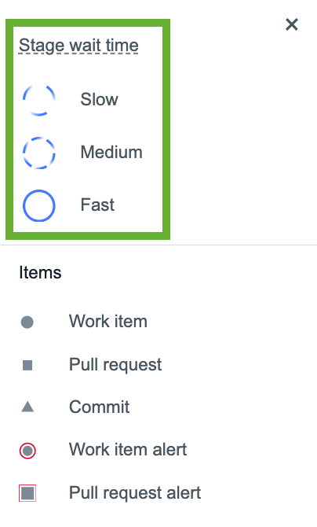 |
| 7 | Focusing on the In Progress stage and looking below the stage circle, one can see that on average a work item stays in the In Progress stage for 4 months. | 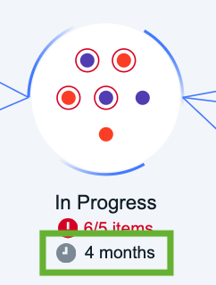 |
| 8 | Above the average time a work item is a Work in Progress (WIP) limit. Notice that the WIP limit is set at 5 work items where an alert has been triggered because there are 6 work items in the In Progress stage. | 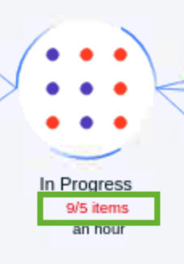 |
| NOTE: | WIP measures the number of active work items which are still a work in progress. The rule of thumb for setting a WIP limit is to use the total number of people who execute in a particular pipeline stage + 1. When the WIP limit has been exceeded (indicated by the red font color), it typically means that people have too many work itms in flight and are wasting time switching context as they move to working between one work item and another. And it is well documented that the average time wasted as a person shifts from working on one thing to another is approximately 45 minutes each time they change focus. Teams are more efficient when they focus on one work item at a time instead of juggling multiple assignements simultaneously. | |
| 9 | Click on one of the "DOTS" in the In Progress stage which has a red circle around it. A red cirlce indicates that a work item has been in a stage longer than the average time. In this case, longer than 4 months. | 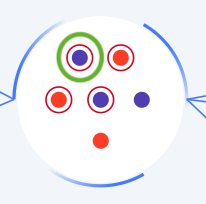 |
| 10 | The work item card provides more detail about the specific work item, including and an audit trail, providing information to help in getting that work item moving forward. DevOps Velocity's Wait State alert helps keep work items that are taking too long top of mind. Close the work item details by clicking the X top right of the work item card. | 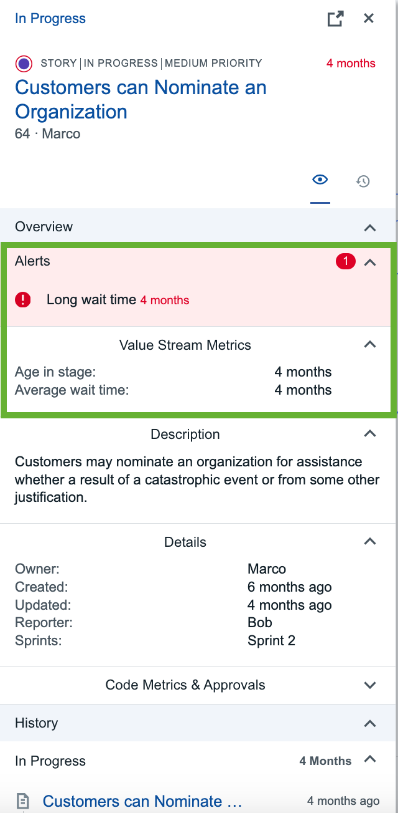 |
| HINT: | Returning to the Legend, notice that DevOps Velocity can also track Commits and Pull Requests as well as Work Items - story, defect or task. | 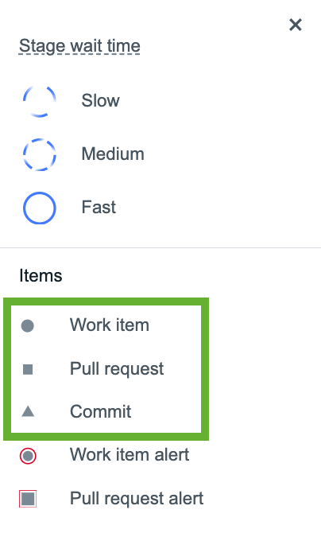 |
| 11 | Close the Legend pop up window by clicking the X in the Legend pop up window. |  |
| 12 | Continuing to work in the JKE Value Stream, locate the filters on the sub navigation bar in the value stream view. | 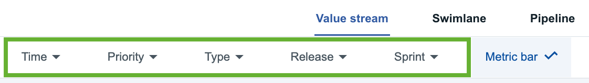 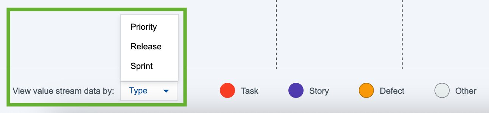 |
| 13 | Click on the following filters and select the filtering options listed below: Time: 60 days (display work items which have been modified in the last 60 days) Type: Story (display work items of Story type only) Sprint: Sprint 2 (display work items which are scheduled for Sprint 2 release) |
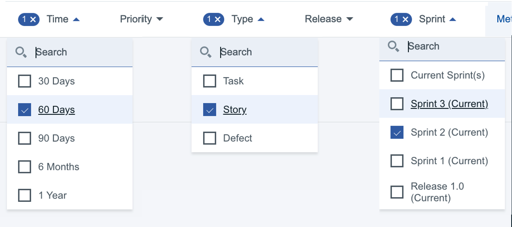 |
| 14 | Notice how only the work items matching the filter settings are displayed. This filtering capability helps teams focus on specific work items matching a specific criteria. | 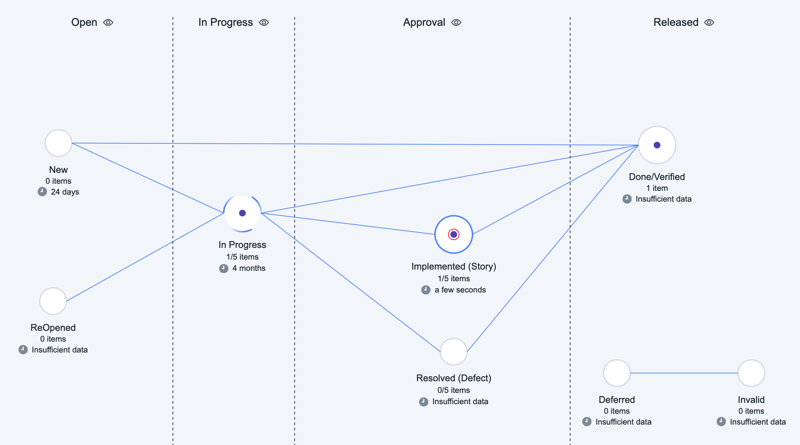 |
| 15 | Clear the filters by clicking the X beside the filter name. | |
| 16 | Working with the "View value stream data by" drop down list box (bottom left of browser window), select the different options available to observe how the work items can be viewed in different ways. Notice how the Value Stream legend changes depending on the view by option selected. Finish by selecting "Type" in the "View value stream data by" listbox. | 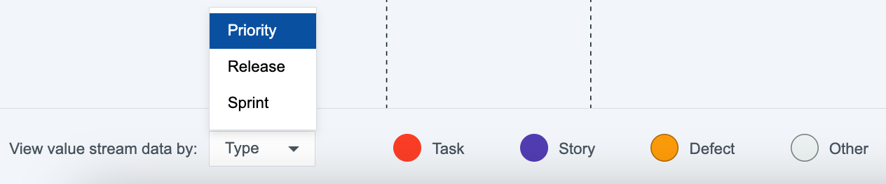 |
| 17 | Another means of filtering is to use DevOps Velocity's search capabilities. Locate the plain text search textbox (top left), enter the value "Allocate Dividends", and press the return key. | 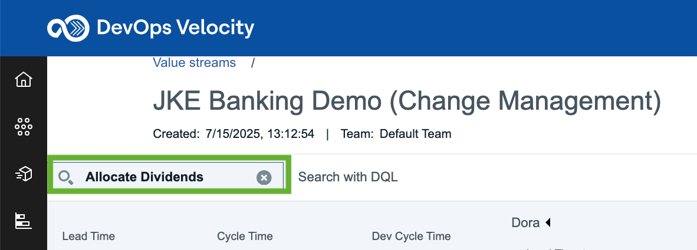 |
| 18 | Notice that only the work items matching that search criteria is displayed. Those work items that have "Dividend Allocations" in the title. | 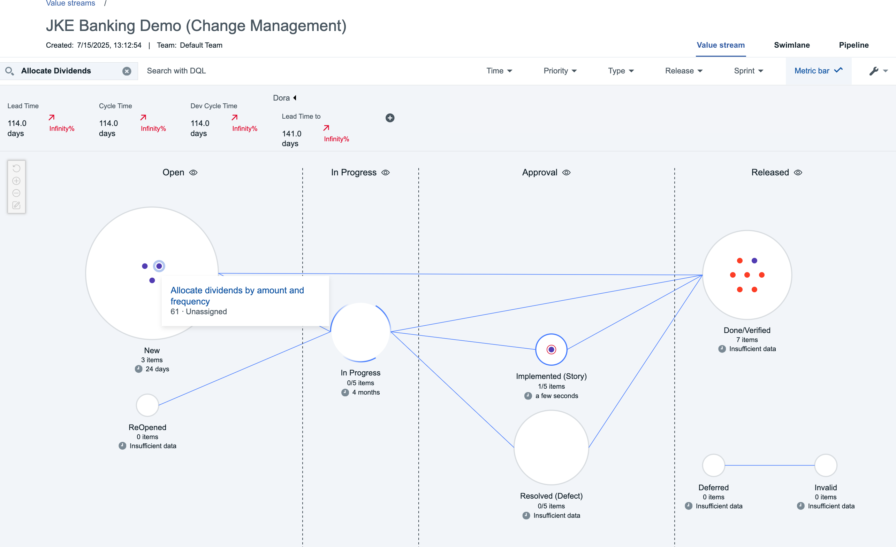 |
| 19 | Click on the Search with DQL (DevOps Query Language) | 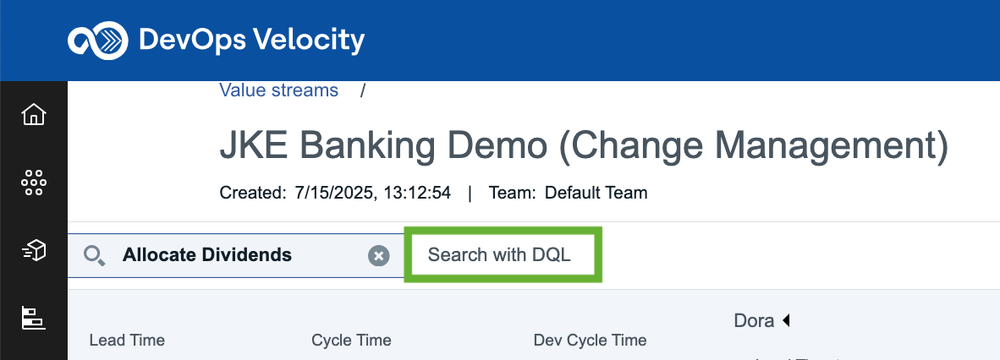 |
| 20 | Enter "issue.owner = Bob" in the text box. | 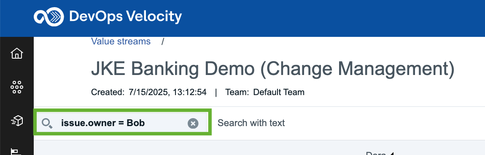 |
| 21 | Observe how DQL enables the user to return a collection of work items meeting the search criteria. In this case, Velocity has displayes ALL work items currently owned by Bob. | |
| HINT: | DQL provides the user with code assist to help build more complex queries to return the desired data. |
Congratulations on successfully completing this section of the demonstration.
1.2 Working with DevOps Velocity's KPIs and Metrics
DevOps Velocity provides numerous Key Performance Indicators (KPIs) out of the box which can be added and displayed at the top of the Value Stream. And depending on how the value stream has been configured in the value stream map file, teams can display KPIs for Lead time to Change, Lead Time, Cycle Time and Dev Cycle Time. Each of which may be modified but in general are calculating the elapse time from a start stage to an end stage. In addition, these KPIs show trending. Is pipeline performance improving or not and by what percentage.
In additional to the lead time and cycle time KPIs, other KPIS are available - Average Load, Throughput, Distribution etc... are also available to help measure team productivity and whether process improvement is necessary.
This section of the demonstration will share details on the many of the KPIs readily available in DevOps Velocity.6
| Step | Details | Additional Information |
|---|---|---|
| 1 | Working in the JKE Banking Demo (Change Management) value stream, locate the Lead Time and Cycle Time KPis. | 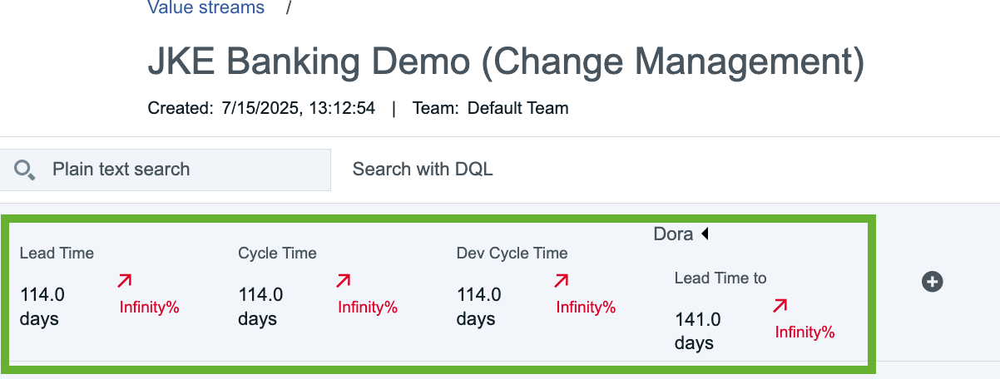 |
| 2 | These KPIs has been configured to calculate times and monitor change for all work items as those pass through the pipeline stages: Lead Time: Start - In progress / End - Done/Verified Cycle Time: Start - In Progress / End - Done/Verified Dev Cycle Time: Start - In Progress / End - Implemented (Story) Lead Time to Change: Start - New / End - Done/Verified |
|
| 3 | Click on the 3 dots beside the Dev Cycle Time KPI. | 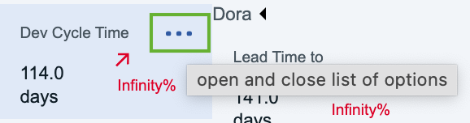 |
| 4 | Click on the Start Stage listbox and confirm that the "In Progress" stage is set. | 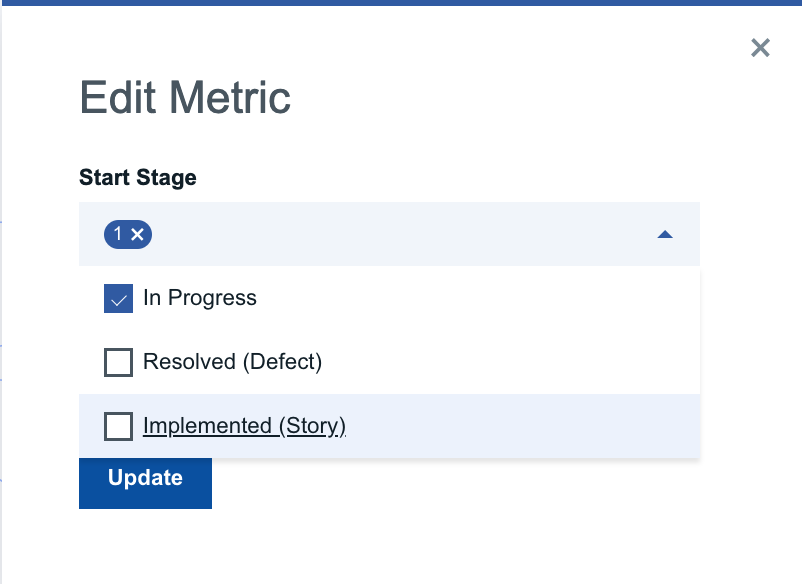 |
| 5 | Click on the End Stage listbox and update selecting both the Implemented (Story) and Resolved (Defect) stages. Click update when complete. | 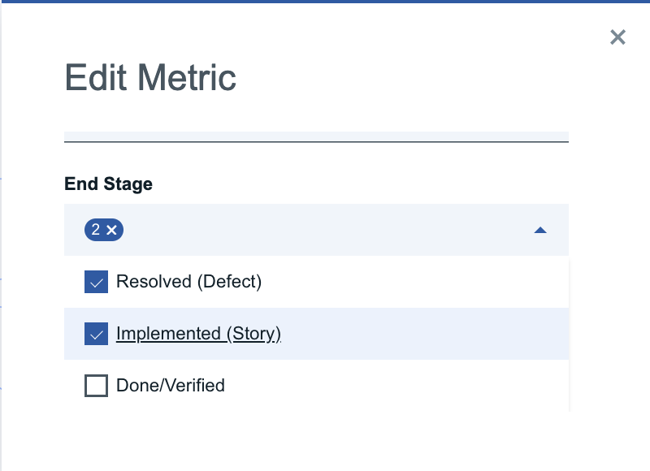 |
| NOTE: | Changing the Start and End stages for one of the Lead Time and/or Cycle Time KPIs forces a re-calculation of the metrics. In the case where there are multiple Start and/or End Stages, DevOps Velocity calculates an average time considering all work items which have moved from the start stage(s) to the end stage(s). | |
| HINT: | Due to the older ELM data being synchronized with DevOps Velocity, the trending feauture is showing infinity. However, as work items change state and new data is added, the trending KPIs will provide very important data. Red arrows indicate that the delivery pipeline is getting slower and Velocity will calculate and display a percentage of how much of a increase in time. Green arrows indicate positive change and again, Velocity will display a percentage of the level of improvement | 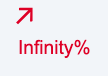 |
| 6 | Click on the + icon (right of the Lead Time and Cycle Time KPIs) to add some additional metrics to the metrics bar. | 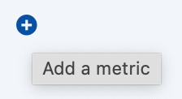 |
| 7 | From the list provided, select Average Load, Throughput and Distribution as 3 examples. | 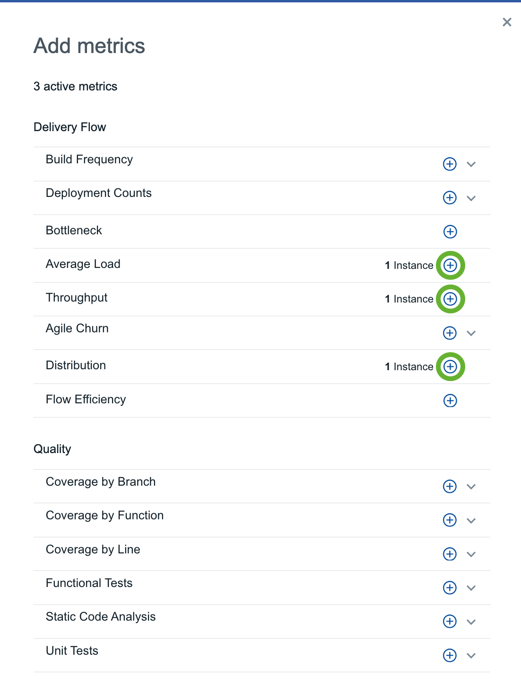 |
| 8 | The metrics bar update should be displayed similar to the following: 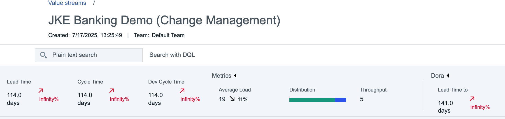 Metrics Definitions: Average Load - The number of work items active or waiting in a value stream at a given time. Load measures utilization capabilities of value streams related to productivity in the process flow. "Active" refers to the stages from the lead-time start until the lead-time end. Throughput - The rate of work items completed during a period of time. Improving throughput can result in better responsiveness to customer requirements and may yield lead time reductions for value streams. Distribution - The proportion of different types of work items over time. This provides teams visibility into the type of work being completed (features, defects, tasks, and so forth.) For more information about DevOps Velocity Metrics, visit Velocity's product documentation page. |
1.3 DevOps Velocity and the Swimlane View
DevOps Velocity's swimlane view display the same work items as shown on the value stream view but categorized by owner, by priority, by type, by release, and by sprint making this view a very powerful view in reviewing, managing, and updating team work during meetings. In this part of the demo, you will experience how the owner swim lane view can be used when communicating as a team. The Priority and Type swimlanes assist in determining if there is the right distribution of in flight work. And the Sprint/Release swimlanes allow the team to quickly see if work is progressing as planned or not.
| Step | Details | Additional Information |
|---|---|---|
| 1 | Continuing to work in the JKE Banking Demo (Change Management) value stream, click on the Swimlane link located on the sub navigation bar. | 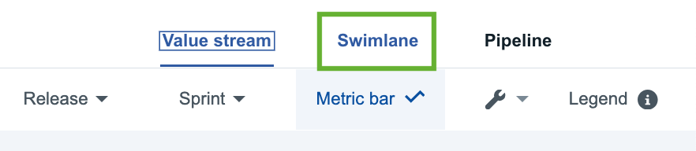 |
| 2 | Click on the "Sprint" swimlane. | 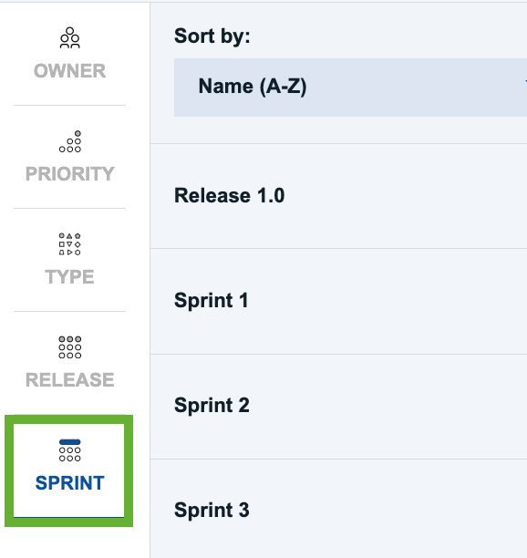 |
| 3 | Notice how easily you can see the status of each work item in each phase and stage of the value stream helping teams determine if they will deliver work on time and as per plan. | 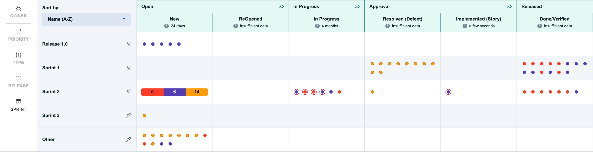 |
| 4 | Click on the Release, Type and Priority swimlanes to observe how DevOps Velocity visualizes the work items for each swimlane category similar to what was seen in the Sprint swimlane view. | |
| Example Scenario | Imagine you are the Team Lead for the JKE Banking product and have assembled the team to review current assignments. How could Velocity assist in conducting this meeting? |
|
| 5 | Click on the "Owner" swimlane view and let's concentrate on the "In Progress" stage as that shows the work items currently being worked on. | 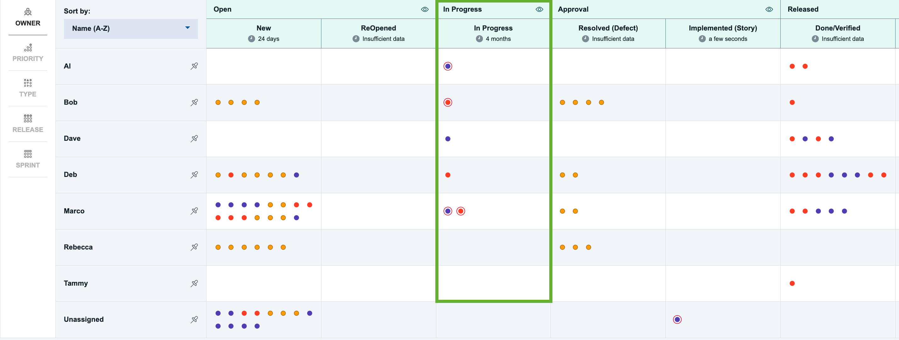 |
| 6 | Notice that Marco has two active work items violating the WIP best practice of one work item at a time and both are exceeding the average wait time. | 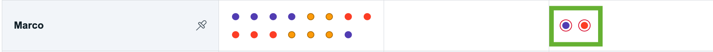 |
| 7 | Click on the Story work item to open the work item card and click on the work item title on the card. | 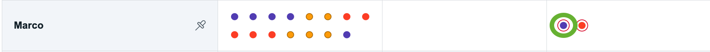 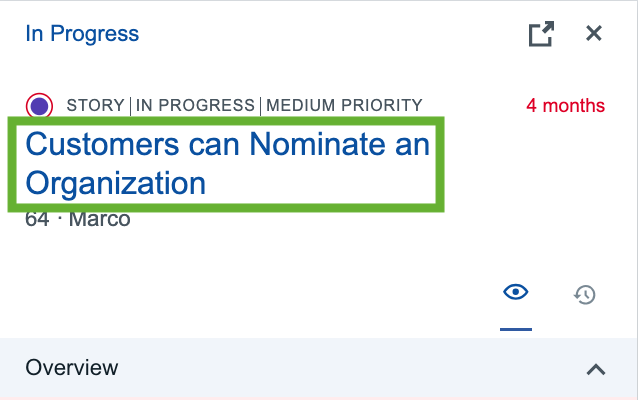 |
| HINT: | If prompted to authenticate with the ELM system, use the following: User ID: sysadmin Password: passw0rd (passw-zero-rd) |
|
| 8 | Working in EWM, click on the work item's Links tab. | 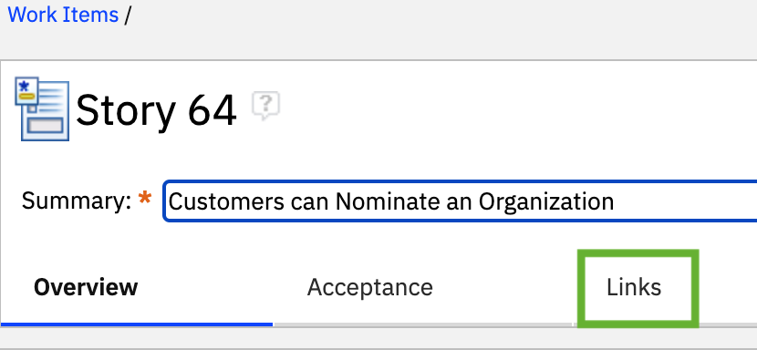 |
| 9 | Hover the mouse pointer over the child work item to display the Task overview information. | 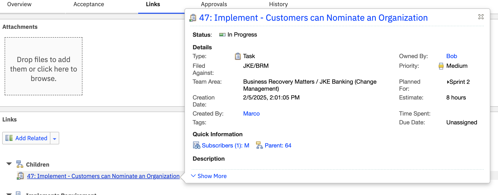 |
| 10 | Notice that "Bob" is the owner of the Task which is associated to the parent Story owned by "Marco". For the purpose of this demo scenario, let's assume that JKE Banking Engineering has a rule that the individual who owns the story should also own the tasks to implement the story. The ownership of work items is clearly a violation of this rule. |
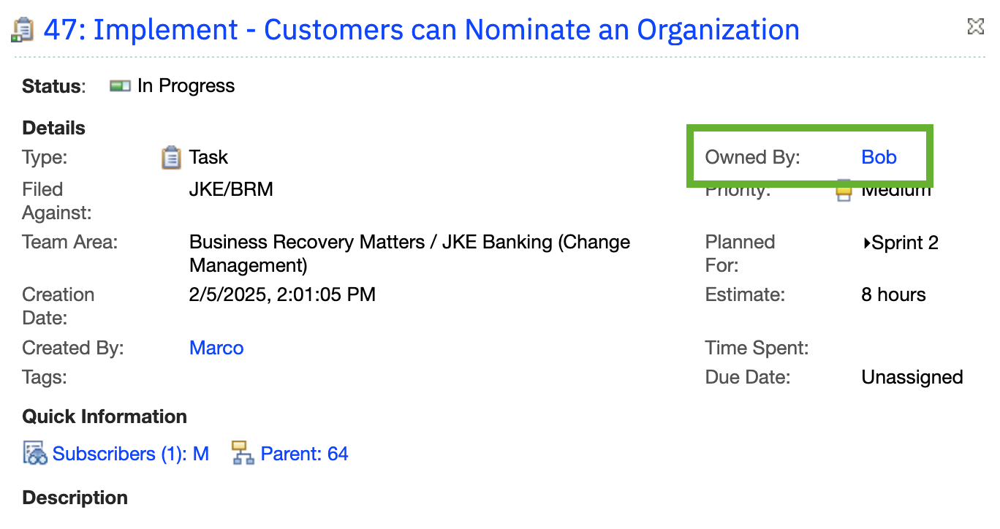 |
| 11 | Returning to the work item Overview tab, change the owner of the Story to "Bob", save the change, and close the EWM browser tab. | 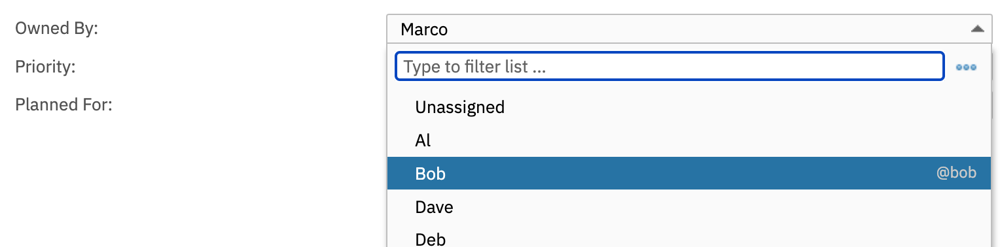 |
| 12 | Click on the Task owned by Marco in the In Progress stage and again open the work item card clicking the card title to open the work item in EWM. | |
| 13 | Click on the Task work item's link tab and hover over the parent work item to view the Story overview. | |
| 14 | Notice that the Story is owned by "Al" but the Task to implement the story is owned by "Marco". | |
| 15 | Click on the Parent work item, change the owner to be Marco, save the changes and close the EWM browser tab. | |
| 16 | Notice how the work items being visualized are reflecting the changes made in EWM. | |
| NOTE: | For the purposes of this demo and to avoid wasting time waiting for the EWM changes to be visualized in Velocity, perform the following steps. |
|
| 17 | Click on the work items assigned to Bob in the In Progress stage. Notice, both are owned by Bob. | |
| 18 | Repeat step 17 for the work items owned by Marco. |
Very quickly and with the help of DevOps Velocity, the Team Lead was able to review work item distribution and take corrective action to make both Bob and Marco more efficient as they now own the story and the children tasks to implement the story.
Congratulations on successfully completing this section of the demonstration.
Return to Top of Demonstration Page
Business Scenario 2: Eliminate guess work and use data to make better investment decisions for process improvement
2.1 DevOps Velocity's "Digital Chain of Custody"
| Step | Details | Additional Information |
|---|---|---|
| 1 |  |
2.2 Adding DevOps Velocity's Bottleneck Detection capability
| Step | Details | Additional Information |
|---|---|---|
| 1 | |
2.3 Working with DevOps Velocity's DashBoards and Charts
| Step | Details | Additional Information |
|---|---|---|
| 1 | |
Return to Top of Demonstration Page
| Software Installed for Demonstration Steps | Software Version |
|---|---|
| DevOps Velocity | v5.1.7 |
| Engineering Lifecycle Management | v7.1 |